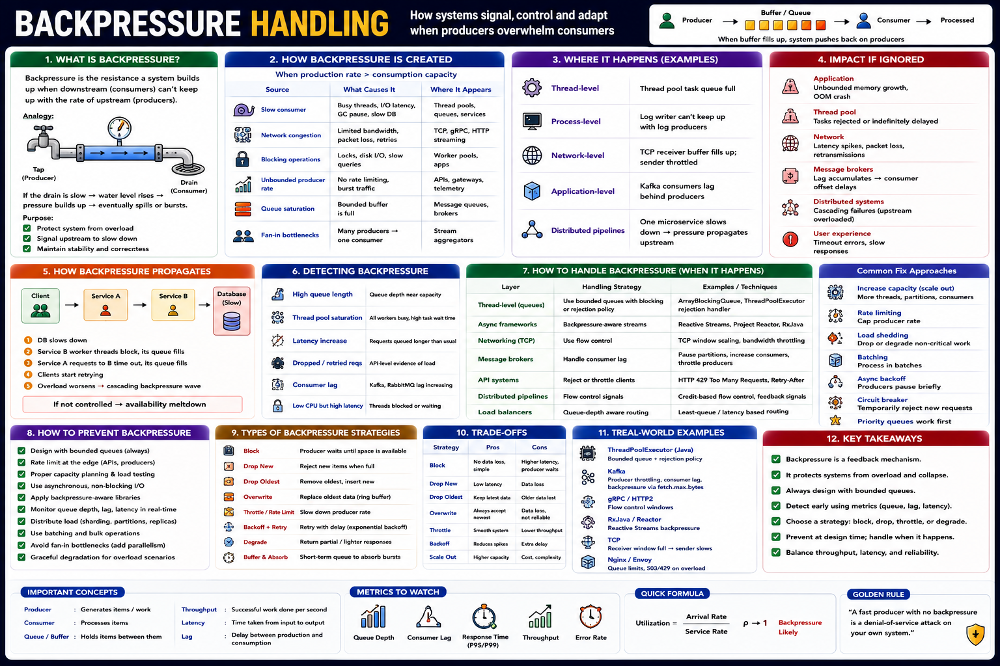

Staff Engineer Reference — Flow Control, Queue Strategies, Cascading Failures & Resilience
Backpressure is a feedback mechanism that slows producers when consumers cannot process data fast enough. It is not a failure — it is a stabilization signal that prevents overload from cascading through the system.
Backpressure occurs whenever Arrival Rate > Processing Rate:
| Cause | Example |
|---|---|
| Slow consumers | Database queries, disk I/O latency |
| Thread pool saturation | All workers busy — new tasks queue or reject |
| Network congestion | Slow downstream service; TCP window fills |
| Queue full | Bounded queue reaches capacity |
| Producer burst | Traffic spike; Kafka producer surge |
| Fan-in bottleneck | Many producers → single consumer (database write) |
Uncontrolled backpressure becomes a cascading failure: unbounded queues exhaust heap memory, retry storms amplify load, and timeouts spread upstream service by service until the entire system is unavailable.
| Layer | Impact When Ignored |
|---|---|
| Memory | OOM from unbounded queues |
| Thread Pools | Task starvation and rejections |
| Network | Timeouts and retransmissions |
| Kafka | Consumer lag grows unbounded |
| Microservices | Cascading failures across the mesh |
| Users | Slow APIs, 429/500 errors |
Monitor these signals — backpressure is often silent until it becomes a crisis:
Primary Metrics
Secondary Signals
| Strategy | Benefit | Trade-off | Best For |
|---|---|---|---|
| Bounded Queue | Prevents OOM | Requests may block or be rejected | Thread pools, all production queues |
| Rate Limiting | Protects consumers upstream | Lower peak throughput | API gateways, Kafka producers |
| Load Shedding | Keeps core system alive | Some requests dropped (return 429) | Traffic spikes, grace degradation |
| Batching | Higher throughput per consumer cycle | Slight latency increase | Database writes, Kafka, messaging |
| Retry with Backoff | Smooth recovery, no retry storms | Longer completion time | Transient failures, queue full |
| Circuit Breaker | Prevents cascading failures | Temporary request rejection | Slow downstream services |
| Autoscaling | Increases processing capacity | Scaling lag; higher infrastructure cost | Cloud workloads with bursty traffic |
Queue full → producer waits until space available
✔ Reliable, no data loss
❌ Higher latency, upstream blocking
Use for: thread pools, ordered processing
Queue full → return 429 / throw RejectedExecutionException
✔ Protects system
❌ Data loss, client must handle
Use for: APIs under traffic spikes
Queue full → remove head, insert new item
✔ Keeps latest data
❌ Older data lost
Use for: video frames, telemetry, sensors
Temporary queue expansion to absorb spikes
✔ Absorbs traffic spikes
❌ Higher memory, hides overload
Use for: short bursts only
| System | Backpressure Mechanism | How |
|---|---|---|
| Java ThreadPoolExecutor | Bounded queue + RejectedExecutionHandler | When queue full: block / reject / caller-runs depending on policy |
| Kafka | Consumer lag → producer throttling | Broker quota enforcement; consumer lag metric drives autoscaling |
| TCP / Network | Receive window size | Receiver advertises window; sender slows when window = 0 |
| Reactive Streams (Project Reactor) | Demand-driven subscription (request(N)) | Subscriber requests N items; publisher sends at most N — pull model |
| Go Channels | Buffered channel capacity | Sender blocks when channel full — language-native backpressure |
| gRPC | HTTP/2 flow control | Per-stream and per-connection window limits slow fast senders |
| Nginx / API Gateway | Connection queue + rate limiter | Return 429 when upstream too slow; limit reqs/sec per client |
| Dimension | Small Queue | Large Queue |
|---|---|---|
| Latency | ✅ Lower | ❌ Higher wait time |
| Burst Handling | ❌ Frequent rejection | ✅ Absorbs spikes |
| Overload Detection | ✅ Fast | ❌ Slow (queue hides overload) |
| Memory Usage | ✅ Low | ❌ Higher |
| Backpressure Signal | ✅ Strong and early | ❌ Weak and delayed |
Backpressure is valuable whenever producers and consumers operate at different speeds. Raise it proactively in these contexts:
| Level | Question Asked |
|---|---|
| Junior | "Why is the queue full?" |
| Senior | "Should I increase the queue size?" |
| Staff | "Is producer rate sustainable long-term? Is consumer capacity sufficient? Should we throttle producers or scale consumers? Is autoscaling fast enough to respond to the spike? Should requests be blocked, dropped, or delayed? Is the large queue hiding a deeper capacity problem? What happens during traffic spikes — and how does backpressure propagate across downstream services?" |
Java ThreadPoolExecutor — Complete Backpressure Config
Kafka Producer Backpressure
TCP Flow Control — Hardware-Level Backpressure
Reactive Streams — Demand-Driven Backpressure
Circuit Breaker — Backpressure + Failure Isolation
